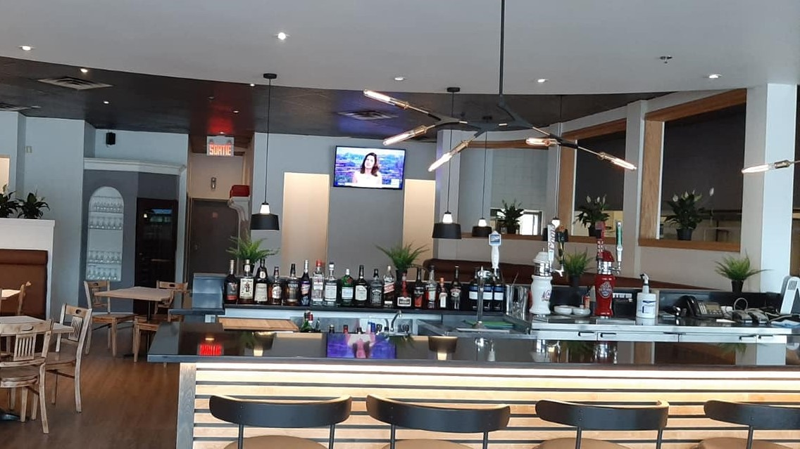

Duo pizza au fromage et
pâtes Alfredo : ☆☆☆☆
Wilfrid Pasta Bar est mon restaurant préféré. Le bar à Pâtes est manié d'une main de maître par les
cuisiniers. Leur menu est diversifié et les duos entre deux plats sont possibles. Pour ce qui est du
duo pizza au fromage et pâtes Alfredo, un bon 4 étoiles minimum. Les portions sont exemplaires et
très bien présentées. Les Pâtes sont cuites à la perfection et la sauce est tout simplement divine.
Pour la pizza, c'est une croûte mince, quelques fois un peu trop cuite, mais encore passable. Le
fromage semble frais et est bien réparti sur toute la superficie de la pizza. Le seul point négatif
du Wilfrid PastaBar : ayant déjà eu la possibilité d'avoir mon plat de pâtes gratiné avec un duo,
lorsque je l'ai redemandé la fois d'après, on me dit qu'il leur est impossible de le faire ?! Même
après beaucoup de parmesan, le goût n'est pas le même. J'espère pouvoir ravoir la chance de faire
gratiner mon duo pizza/pâtes ! En conclusion, le resto Wilfrid Pasta Bar est un excellent restaurant
avec un service impeccable ! 4 étoiles minimum !
Wilfrid est de loin mon restaurant préféré parmi les trois présenté. Tout d’abord, la nourriture est
toujours chaude, puisqu’elle est cuisinée devant vous. Cela paraît futile, mais dans plusieurs
restaurants, il arrive que la nourriture arrive à température pièce ce qui fait en sorte qu’il faut
se presser à la consommer. Ensuite, nous avons accès à une multitude de choix de garnitures, ce qui
permet d’avoir des pâtes à son goût sans avoir à faire de compromis. Finalement, c’est celui, parmi
les trois restaurants, qui est le plus abordable. En effet, pour un total de 19,55$, on reçoit une
excellente portion de délicieuses pâtes!
Wilfrid PastaBar
1974, boul Le Corbusier, Laval QC

Le Wilfrid PastaBar tient une place particulière dans mon cœur depuis quelques années. En effet,
c’est un restaurant auquel mes parents m'ont emmené pour la première fois il y a une dizaine
d'années et depuis j’ai toujours eu un bon service ainsi qu’un repas délicieux à chaque visite.
L’attrait principal du restaurant est bien évidemment son bar à pâtes auquel chacun peut choisir
parmi trois types de pâtes qui changent d’un jour à l’autre, une sauce parmi celles présentées ainsi
qu’un assortiment de légumes et de viandes. Personnellement, j’adore prendre des pennes avec une
sauce bolognaise piquante ainsi que du jambon, de la saucisse et des olives.
À mon avis, il y a trois grands avantages au bar à pâtes. Premièrement, puisque le plat est fait
directement devant soi, il est toujours très chaud tout au long du repas. Deuxièmement, le pasta bar
coûte environ le même prix que les autres plats du menu, ce qui est un peu moins que les autres
restaurants. Troisièmement, presque n’importe qui peut y trouver son bonheur puisque le bar à pâtes
contient assez d’options pour personnaliser son repas au goût de chacun. En dehors de la nourriture,
le prix comme j’en ai parlé plus tôt est plutôt abordable, car la majorité des plats coûtent en
dessous de 20$. En prenant tout cela en compte, je donne une note de 5/5 au Wilfrid PastaBar. Je le
recommande définitivement et il reste à ce jour mon restaurant préféré qui ne manque jamais de me
satisfaire.